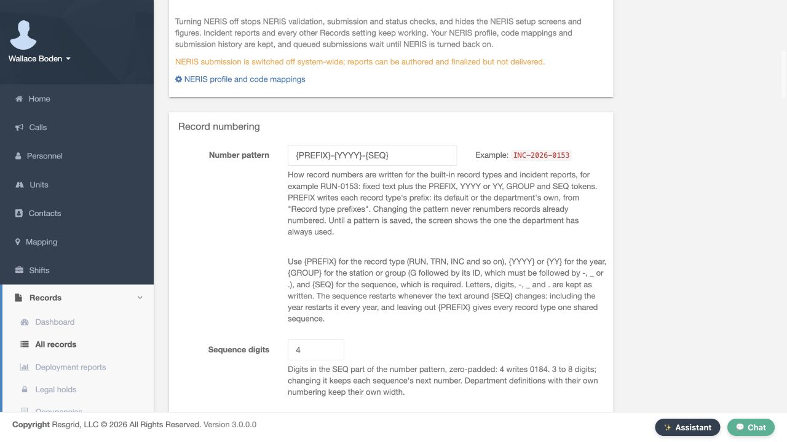
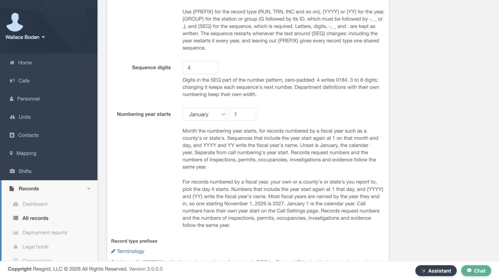
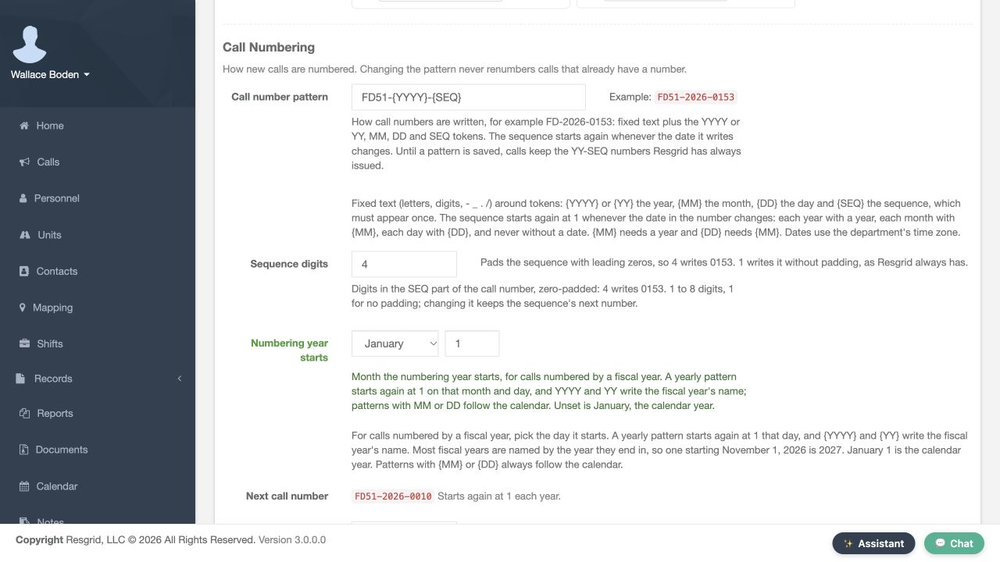
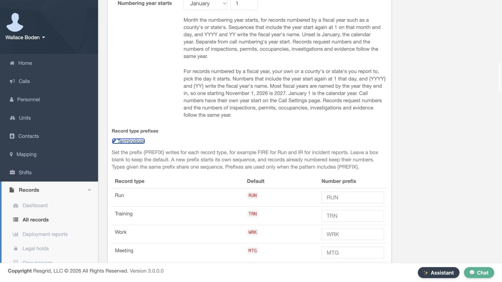
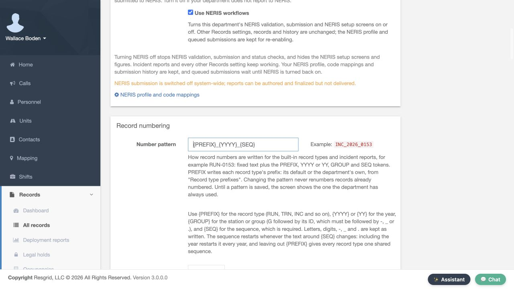
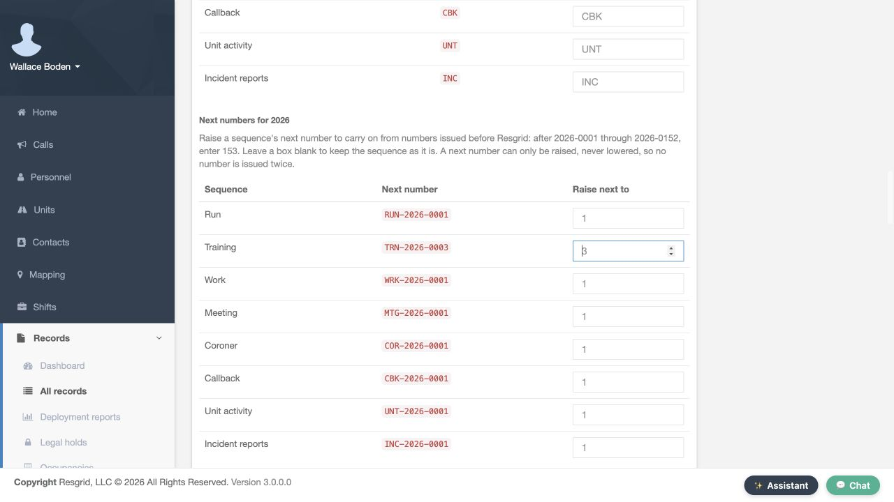
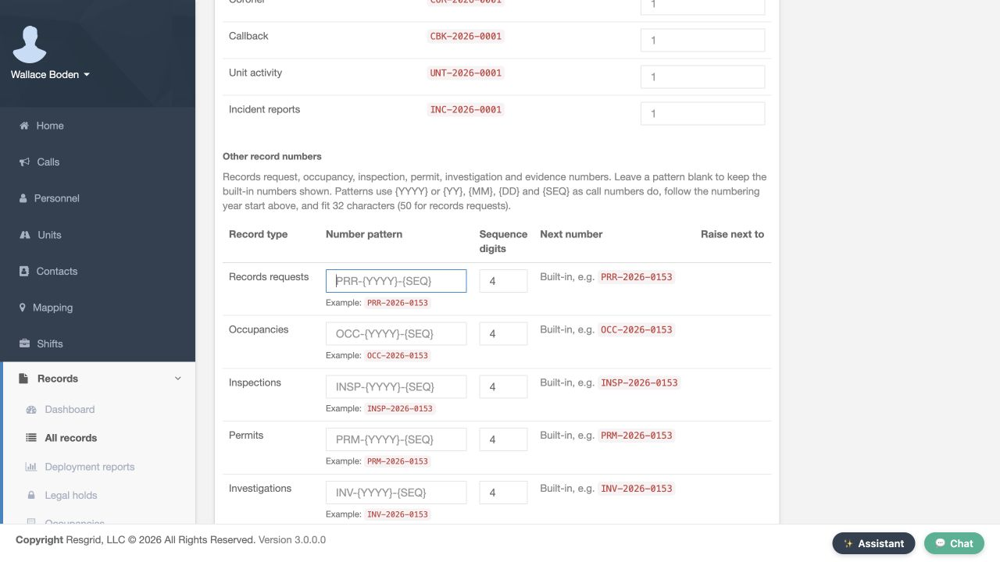

Core · Video walkthrough
Configure record numbering and verify saved changes
Understand patterns, padding, year starts and prefixes; save a custom pattern, verify its sequence previews, then restore the original format.
Before you begin
- An authorized department administrator session with Records Settings available.
- A separate training department for practice and an agreed numbering policy before changing operational settings.
Chapters
- Start in the department Records Settings
- Read the number pattern and its tokens
- Distinguish padding from the next sequence
- Review the numbering year start
- Understand type prefixes and shared sequences
- Prepare a custom pattern in the training department
- Use the actual Save action
- Verify the returned success message
- Reopen settings and confirm persistence
- Inspect the effect on next-number previews
- Restore the original pattern for the exercise
- Verify the original sequence resumes
- Distinguish other record-number settings
- Apply a clear numbering policy across departments
Watch the walkthrough
Step 1
Start in the department Records Settings
Record numbers help people find and distinguish documents during a handover or a data migration. This walkthrough starts on Records Settings in the fictional Firehouse fifty-one training department. We will inspect the numbering controls, save one change, verify what persisted and restore the original pattern. The department name and settings page should match the department you intend to administer.

Practice
Verify the intended department and Records Settings page before editing.
Step 2
Read the number pattern and its tokens
Scroll to Record numbering. Number pattern currently contains the prefix token, a hyphen, the four-digit year token, another hyphen and the sequence token. The help below explains what each token writes. Prefix uses the record type prefix, year includes the numbering year, and sequence supplies the counter. Changing this pattern does not renumber records that already have numbers. Read that impact before applying a new format.

Practice
Read the existing pattern and the explanation that existing record numbers are retained.
Step 3
Distinguish padding from the next sequence
Sequence digits is four in this department. The help shows that four digits writes a zero-padded value such as zero one eight four. This control accepts three through eight digits. Changing the width keeps each sequence's next number; it is not the same as choosing a different next counter. Definitions that have their own numbering keep their own width. In this exercise, we leave the four-digit setting as it is.
Practice
Find Sequence digits and distinguish zero padding from a counter change.
Step 4
Review the numbering year start
Numbering year starts has a month and day. January first is selected here. The displayed help explains how a fiscal-year start affects sequences that include the year. This setting is separate from call numbering, which has its own year start on Call Settings. Review the policy your department actually follows before changing either. This demonstration keeps the existing January-first value.


Practice
Identify the actual month and day controls and read their scope before changing a year start.
Step 5
Understand type prefixes and shared sequences
Record type prefixes lists each type, its default and a Number prefix box. The visible defaults include Run, R U N; Training, T R N; Work, W R K; and Meeting, M T G. Leave a box blank to keep its default. The help explains that a new prefix starts its own sequence, and types given the same prefix share one sequence. Prefixes take effect when the number pattern includes the prefix token. Choose them deliberately rather than using a cosmetic change that accidentally joins two counters.

Practice
Compare the visible type, default and prefix columns and read the sharing rule.
Step 6
Prepare a custom pattern in the training department
For this local exercise, replace the two hyphens in Number pattern with underscores. Keep the same prefix, four-digit year and sequence tokens. The example beside the field now uses underscores too. This is still an unsaved form value. The format of the example is useful feedback, but it does not prove the department has saved the change or issued a new record number.
Practice
Compare the prepared underscore pattern and example without treating the preview as a saved result.
Step 7
Use the actual Save action
Scroll to the bottom of Records Settings, where Save and Cancel are visible. Review your intended edit before choosing Save. This demonstration changes the number pattern only; it does not submit a record, raise a counter or request delivery to an external service. Use Save once, then verify the returned settings page instead of assuming that typing in the field completed the configuration.

Practice
Find the real Save control at the bottom of the settings form.
Step 8
Verify the returned success message
The returned page displays Records settings saved. This confirms that the settings form was accepted. We still need to verify the particular value we intended to change. A general success notice is useful, but reading the saved field and its effect gives an administrator a more complete check.

Practice
Read the success notice, then continue to inspect the specific saved field.
Step 9
Reopen settings and confirm persistence
Reopening Records Settings shows the underscore-separated pattern in Number pattern, with the matching example alongside it. This is a fresh page load after saving. Compare the full pattern, including each token and separator, with your intended format. The result confirms persistence of this local setting; the example is still an example rather than a newly issued record.

Practice
Verify the complete saved pattern after reopening the page.
Step 10
Inspect the effect on next-number previews
The saved pattern changes Next numbers for twenty twenty-six. The Run and Training previews now have underscores and end in zero zero zero one. The text around the sequence token changed, so this format has its own sequence. Raise next to is a separate control for carrying on from previously issued numbers. Leave it alone when you do not intend to raise a counter. Viewing this table does not issue the previewed numbers.
Practice
Read the new pattern previews and distinguish them from a request to raise a counter.
Step 11
Restore the original pattern for the exercise
After the exercise, the original hyphen-separated pattern was restored. Record numbering now shows the original prefix, year and sequence arrangement. Restore a practice change only when that is your intended configuration. Changing separators back is a format decision; it is not a way to erase previously issued numbers or reset a counter.
Practice
Compare the restored pattern with the original baseline.
Step 12
Verify the original sequence resumes
The original format now shows Training ending in zero zero zero three, the same next-number preview it had before the demonstration. Run ends in zero zero zero one. Restoring the earlier format resumed its existing sequence rather than restarting Training at one. No new records were issued during this exercise. When importing from another system, review Raise next to against the numbers already issued before applying a higher starting point.

Practice
Verify the resumed original Training sequence without entering or saving a counter increase.
Step 13
Distinguish other record-number settings
Other record numbers has separate rows for Records requests, Occupancies, Inspections, Permits and Investigations. Each visible row has a Number pattern, Sequence digits and a next-number area. The help explains that blank patterns keep the built-in numbers and that these types follow the record-numbering year start above. Review the particular row you intend to administer. This recording inspects those controls without saving a custom pattern for these other record types.

Practice
Identify the correct row before editing another record-number pattern.
Step 14
Apply a clear numbering policy across departments
A consistent numbering policy helps security teams find post reports, wildland contractors distinguish crew-support work, and industrial teams coordinate equipment records. Community paramedicine and mental health teams can organize appropriate service documentation, while search-and-rescue teams can distinguish training and support records. Fire and E M S departments can use the same pattern review. Agree on the format, inspect the correct controls, save deliberately and verify both persistence and the next-number preview.
Practice
Apply the demonstrated format, persistence and sequence checks to a fictional policy for your department.
Examples for your department
- Fire / EMS
- Agree on distinguishable training and incident record identifiers.
- Community response
- Keep appropriate outreach documentation identifiable under the department policy.
- Search and rescue
- Distinguish training and mission-support records.
- Security
- Use a consistent identifier format for authorized post-support documentation.
- Wildland
- Distinguish crew-support records and preserve previously issued identifiers.
- Industrial
- Coordinate equipment-support records using understood prefixes and counters.
Transcript
Download transcriptRead the complete transcript
Configure record numbering and verify saved changes Audience: Department administrators, Records administrators, Migration coordinators Start in the department Records Settings Record numbers help people find and distinguish documents during a handover or a data migration. This walkthrough starts on Records Settings in the fictional Firehouse fifty-one training department. We will inspect the numbering controls, save one change, verify what persisted and restore the original pattern. The department name and settings page should match the department you intend to administer. Practice: Verify the intended department and Records Settings page before editing. Read the number pattern and its tokens Scroll to Record numbering. Number pattern currently contains the prefix token, a hyphen, the four-digit year token, another hyphen and the sequence token. The help below explains what each token writes. Prefix uses the record type prefix, year includes the numbering year, and sequence supplies the counter. Changing this pattern does not renumber records that already have numbers. Read that impact before applying a new format. Practice: Read the existing pattern and the explanation that existing record numbers are retained. Distinguish padding from the next sequence Sequence digits is four in this department. The help shows that four digits writes a zero-padded value such as zero one eight four. This control accepts three through eight digits. Changing the width keeps each sequence's next number; it is not the same as choosing a different next counter. Definitions that have their own numbering keep their own width. In this exercise, we leave the four-digit setting as it is. Practice: Find Sequence digits and distinguish zero padding from a counter change. Review the numbering year start Numbering year starts has a month and day. January first is selected here. The displayed help explains how a fiscal-year start affects sequences that include the year. This setting is separate from call numbering, which has its own year start on Call Settings. Review the policy your department actually follows before changing either. This demonstration keeps the existing January-first value. Practice: Identify the actual month and day controls and read their scope before changing a year start. Understand type prefixes and shared sequences Record type prefixes lists each type, its default and a Number prefix box. The visible defaults include Run, R U N; Training, T R N; Work, W R K; and Meeting, M T G. Leave a box blank to keep its default. The help explains that a new prefix starts its own sequence, and types given the same prefix share one sequence. Prefixes take effect when the number pattern includes the prefix token. Choose them deliberately rather than using a cosmetic change that accidentally joins two counters. Practice: Compare the visible type, default and prefix columns and read the sharing rule. Prepare a custom pattern in the training department For this local exercise, replace the two hyphens in Number pattern with underscores. Keep the same prefix, four-digit year and sequence tokens. The example beside the field now uses underscores too. This is still an unsaved form value. The format of the example is useful feedback, but it does not prove the department has saved the change or issued a new record number. Practice: Compare the prepared underscore pattern and example without treating the preview as a saved result. Use the actual Save action Scroll to the bottom of Records Settings, where Save and Cancel are visible. Review your intended edit before choosing Save. This demonstration changes the number pattern only; it does not submit a record, raise a counter or request delivery to an external service. Use Save once, then verify the returned settings page instead of assuming that typing in the field completed the configuration. Practice: Find the real Save control at the bottom of the settings form. Verify the returned success message The returned page displays Records settings saved. This confirms that the settings form was accepted. We still need to verify the particular value we intended to change. A general success notice is useful, but reading the saved field and its effect gives an administrator a more complete check. Practice: Read the success notice, then continue to inspect the specific saved field. Reopen settings and confirm persistence Reopening Records Settings shows the underscore-separated pattern in Number pattern, with the matching example alongside it. This is a fresh page load after saving. Compare the full pattern, including each token and separator, with your intended format. The result confirms persistence of this local setting; the example is still an example rather than a newly issued record. Practice: Verify the complete saved pattern after reopening the page. Inspect the effect on next-number previews The saved pattern changes Next numbers for twenty twenty-six. The Run and Training previews now have underscores and end in zero zero zero one. The text around the sequence token changed, so this format has its own sequence. Raise next to is a separate control for carrying on from previously issued numbers. Leave it alone when you do not intend to raise a counter. Viewing this table does not issue the previewed numbers. Practice: Read the new pattern previews and distinguish them from a request to raise a counter. Restore the original pattern for the exercise After the exercise, the original hyphen-separated pattern was restored. Record numbering now shows the original prefix, year and sequence arrangement. Restore a practice change only when that is your intended configuration. Changing separators back is a format decision; it is not a way to erase previously issued numbers or reset a counter. Practice: Compare the restored pattern with the original baseline. Verify the original sequence resumes The original format now shows Training ending in zero zero zero three, the same next-number preview it had before the demonstration. Run ends in zero zero zero one. Restoring the earlier format resumed its existing sequence rather than restarting Training at one. No new records were issued during this exercise. When importing from another system, review Raise next to against the numbers already issued before applying a higher starting point. Practice: Verify the resumed original Training sequence without entering or saving a counter increase. Distinguish other record-number settings Other record numbers has separate rows for Records requests, Occupancies, Inspections, Permits and Investigations. Each visible row has a Number pattern, Sequence digits and a next-number area. The help explains that blank patterns keep the built-in numbers and that these types follow the record-numbering year start above. Review the particular row you intend to administer. This recording inspects those controls without saving a custom pattern for these other record types. Practice: Identify the correct row before editing another record-number pattern. Apply a clear numbering policy across departments A consistent numbering policy helps security teams find post reports, wildland contractors distinguish crew-support work, and industrial teams coordinate equipment records. Community paramedicine and mental health teams can organize appropriate service documentation, while search-and-rescue teams can distinguish training and support records. Fire and E M S departments can use the same pattern review. Agree on the format, inspect the correct controls, save deliberately and verify both persistence and the next-number preview. Practice: Apply the demonstrated format, persistence and sequence checks to a fictional policy for your department. Examples for your department Fire / EMS: Agree on distinguishable training and incident record identifiers. Community response: Keep appropriate outreach documentation identifiable under the department policy. Search and rescue: Distinguish training and mission-support records. Security: Use a consistent identifier format for authorized post-support documentation. Wildland: Distinguish crew-support records and preserve previously issued identifiers. Industrial: Coordinate equipment-support records using understood prefixes and counters.